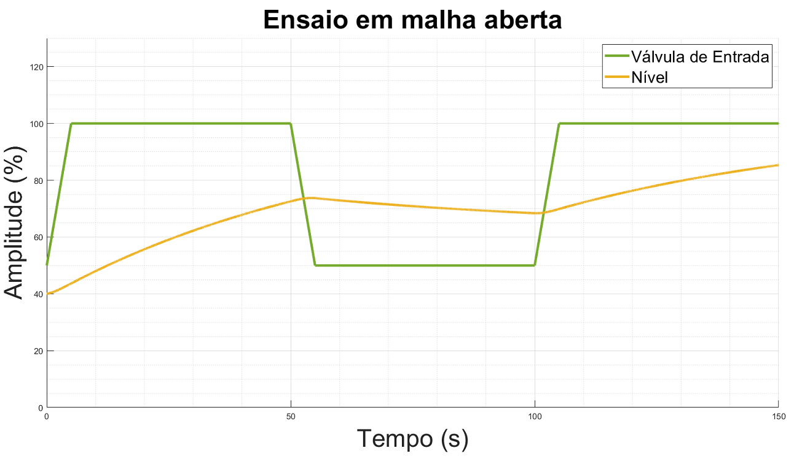
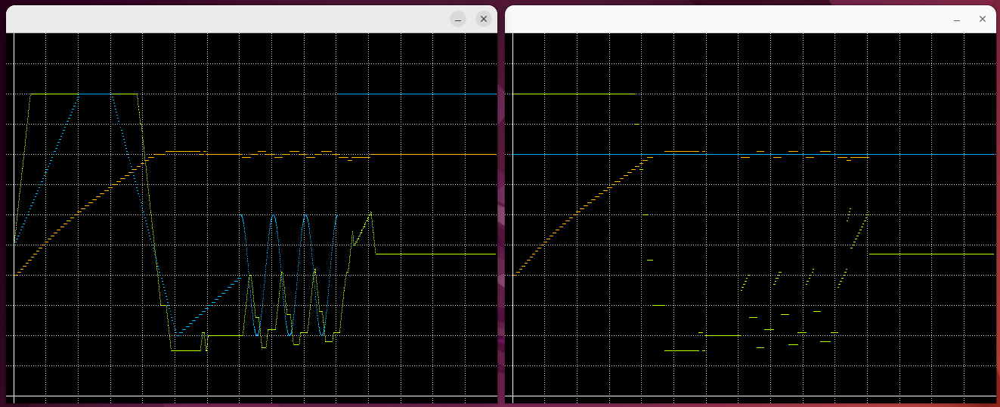

|
Controle de Nível via UDP FINAL
Controle de nível de uma planta usando UDP, C (POSIX). Proposto como trabalho final da disciplina ENG10048 da UFRGS.
|
|
Controle de Nível via UDP FINAL
Controle de nível de uma planta usando UDP, C (POSIX). Proposto como trabalho final da disciplina ENG10048 da UFRGS.
|
Esse repositório contem o trabalho final da disciplinha ENG10048 - Protocolos de Comunicação - UFRGS cursada em 2022/1. O trabalho foi proposto pelo professor Alceu Heinke Frigeri e desenvolvido pelos alunos Lucas Esteves e Vitor Carvalho. Para mais detalhes, verifique o *.pdf* que contém a descrição do trabalho.
A biblioteca SDL 1.2 é necessária somente para executar o programa com a parte gráfica.
chmod +x bash.shsudo apt install libsdl1.2-dev#define GRAPH 1 (linha 11 em ambos os arquivos) utilizando //gcc server.c -o server -pthread -lm -lrtgcc client.c -o client -pthread -lm -lrt./server <porta>./client <serverIP> <porta>Neste treço são apresentadas algumas capturas de telas a respeito dos resultados obtidos.
Na Figura 1, abaixo, é apresentado a resposta do sistema sem controlador.
Fig.1 - Resposta do sistema sem controle.
Por sua vez, na Figura 2, é a apresentado o ensaio, sem pertubação, que foi efetuado para identificar (minimamente) características do processo para possibilitar seu controle.

Fig.2 - Ensaio para identificação do sistema
Com base nessas duas Figuras (Figura 1 e Figura 2) é possível verificar a necessiade do controlador e o como o sistema se comporta na presença de um acionamento
Na Figura 3, abaixo, é possível observar o controle do processo com um controlador Bang-Bang e sem perturbação de rede. A janela da esquerda representa a vista do servidor, onde a planta é executada e a da direita a vista do cliente, que efetua o controle. Para a janela do servidor:
Fig.3 - Resposta com controlador Bang-Bang.
Na Figura 4, abaixo, é possível observar o controle do processo com um controlador PID e sem perturbação de rede. A janela da esquerda representa a vista do servidor, onde a planta é executada e a da direita a vista do cliente, que efetua o controle. Para a janela do servidor:

Fig.4 - Resposta com controlador PID.